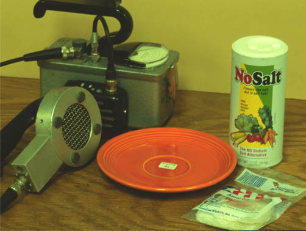

Radioactive Items for Sale

Until recently, a number of marketed products had considerable levels of radioactivity. Shown with the Geiger counter are a piece of orange "Fiestaware", a mantle from a camping lantern, and No Salt salt substitute. The orange dish gains its radioactivity from uranium oxides in the orange glaze. This dish measured 20 millirad /hour when the counter was placed directly on it. The mantle measured 9 mr/hr. The No Salt has a lower level of radioactivty from the potassium chloride it contains, measuring 0.2 mr/hr.
|
Index |